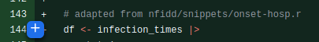
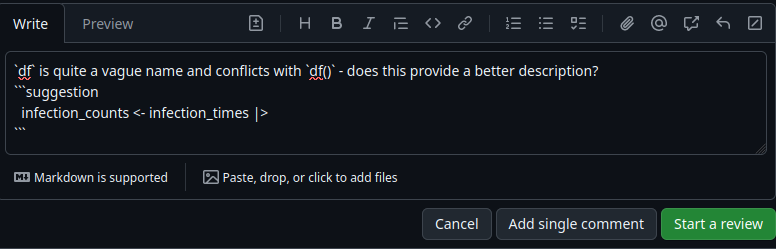

Who is this for?
I work as a data scientist alongside people who typically have academic backgrounds in statistics, epidemiology, or something of a similar feel. Some of us have job titles relating to data science, other to mathematical and statistical modelling. None of us are software developers by trade.
However, we’re writing software all day. We’re writing mathematical/statistical models, creating data-driven products and doing data engineering. We quality assure all of this work via code review.
The honest answer to Who is this for? is that this is for me. It’s for a previous version of myself who knew the mechanics of reviewing code, but could have exercised a bit more much more nuance.
That being said, I think anyone working in some kind of modelling or analytical role, whose main output is some sort of mathematical or statistical analysis, but writes code to implement their models could find this useful.
It doesn’t really matter what programming language you use, or whether you’re storing your code on GitHub, GitLab, Bitbucket or whatever else. However this will be biased towards R and GitHub because that’s what I use. The concepts are important here, not the precise toolkit.
If you’re here, I’m going to assume you know roughly what a code review is, but it doesn’t hurt to have a quick refresher.
Code review is a form of peer review. Let’s suppose you’ve written some code, made a pull request (PR) and then assigned a reviewer. The reviewer goes through your code and looks for potential issues with the code, suggests improvements, and maybe says one or two nice things about the thing you’ve been grinding away at.
I’d also like to be upfront here and say there is very little original thought going into this. Software developers have written a lot of good content on what makes good code review. I’ll link to some further reading and inspiration and the end.
My aim here is to:
- Bring good code review practice to those in analytical roles.
- Communicate this good practice in a way which works for those in analytical roles.
How to review code
In our team, we provide a formal review via GitHub. Let’s suppose you’ve opened a PR, marked it as ready and assigned one or more reviewers.
We will first think about the literal act of reviewing code, and then later we will think about what the reviewer should look for and how they should approach requesting changes. If you’re comfortable with annotating someone else’s code in a PR, skip ahead.
Literal code review
Here you’re going to look at the code, maybe run or interact with it, then make comments about the code via the PR mechanisms. I tend to start by having a skim over the code to look for general structure, then spend some time running and interacting with the code later to really get into the guts of it.
Annotating code
To make a comment, click the + symbol to comment on a single line of code. Click a + and drag down to comment on multiple lines.

- You can write a general comment or question in the text box.
- Click the little
+/-symbol (it looks a bit like a page 📄) to make a direction suggestion on the code. This is useful when it’s simply easier to make the fix, than telling someone how to make the fix. - Clicking the symbol again will let you make a new suggestion on the same line(s) of code. Handy when you think there are multiple ways forward.

- Click
Add single commentif the review is informal or you’re just being nosey.Start reviewis better formal reviews.
Submitting review
Once you’ve finished reviewing, click Review changes in the top right of the browser window. Take some time to write encouraging feedback in the comment box.
Then click one of
Comment: just general feedback or you’re being nosey.Approve: this PR is worthy of main.Request changes: this needs a little work.
as appropriate and then Submit Review.
- Comments on code start a “conversation” which can be resolved. It is up to the reviewer to resolve conversations.
- I’d encourage authors to use emoji reactions or responding to comments to track their work.
- You can view changes incurred by a particular commit. Clicking the commit ID on the commit history (main page of the PR) will show you these changes. This is really useful in the ping-pong (review back-and-forth) stage of the review to isolate changes, rather looking through the entire PR again.
Why do we review code?
There is one fairly obvious answer to this question: to check the code works. But there are a whole host of benefits to teams performing code review.
Knowledge transfer & collaboration
Analysts have a broad range of backgrounds and experiences. The reviewer can learn from the PR author, and by making suggestions, the author can learn from the reviewer by inspecting their code, running it, and asking questions.
Shared knowledge about the code base ensures there is not a single point of failure in the team: you really want your bus number to be bigger than one.
By reviewing code, the authors and reviewers are brought together to solve a problem. It can even be a good idea to bring in a reviewer before the work is complete to get the author unstuck, or just provide a little guidance.
Squash bugs before they occur
We don’t want bugs in production code. Checking over the code before it’s put into production is the best way to prevent this. But bugs can still occur, we’re only human.
Quality and compliance
Here you’ll be checking that code is maintainable and well formatted. You’ll also want to check that the outputs meet a minimum standard, for example, does your model give vaguely sensible predictions? Does the graph going to the really important stakeholder look good? Have you rounded value in the table to a reasonable number of significant figures or are we really going to tell the CEO that we’re forecasting a profit of £103,255.5599885255 next week?
There’s also a security aspect here: by reviewing code, we provide a guard against malice. This should never be a problem, but nasty people do have jobs, a little code review protects against this.
What is a reviewer looking for?
When reviewing code, it’s a good idea to follow a mental checklist. I find the following works well for me and the team I’m part of:
- Does the code actually run?
- Can I tell what this code should do?
- Does the code do what it should do?
- Are models giving reasonable outputs?
- Are graphs accessible to those with colour vision deficiency or other visual impairments?
- I really like {colorblindr} for checking this!
- Is it clear how to use or run the code?
- Does the code have clear, maintainable structure?
- I think Chapter 3 of Best Coding Practices for R is a good guide.
- Is the code difficult to read, overly complex or full of repetition?
- Does the code have a consistent style with evocative function and variable names?
What does the reviewer do?
Asks questions to help the reviewer understand the code
This is inherently tied to the rest of code review, but I think a good way to review code is via questioning. More on this later.
Ask the code author about why they’ve implemented their methods in a certain way, ask them if they think there are better ways to do things, ask them to clarify chunks of code with unclear meaning, output or purpose and ask if their implementations are robust to future changes.
Identifies (potential) problems in the code
As a reviewer, you need to figure out if the code meets some absolute minimum requirements. To do this, you’re going to look for
- Does the code do what it should do?
- Bugs (or potential future bugs).
- Incorrect mathematics/statistics.
- Have we accidentally pushed secure or sensitive information?
Anything which is buggy, incorrect or insecure should not enter main.
Suggests ways to improve the code
You should not just be looking for things that are wrong with the code, but also ways to improve the health of the code and your models:
- Suggest refactors/changes to improve clarity of code or documentation, reproducibility and/or performance.
- Suggest adding useful features.
- Suggest removing redundant or excessive features.
Provides nit picks
Nit picks, or just nits, are annoying (and something I do too much, sorry colleagues), but they are an inevitable apart of code review
Nits are usually small stylistic points. Examples include:
- White space.
- Variable/function names (this is arguably more than a nit!)
- Positioning of brackets, choice of assignment operator, and other fairly inconsequential suggestions.
Pretty much all of this is avoided when a team adopts and enforces a style guide.
In my team, we use {lintr} and {styler} and to automate style guide checks. We ensure their usage via precommit hooks; R users may be interested in {precommit}.
Nits are allowed, but do keep them to a minimum. They’re not a hill to die on.
It can be a good idea to prefix your nit with “nit:” to make it clear that you’re being pedantic.
How should the reviewers approach review?
We’re going to think here about how review code in a way which addresses concerns in a way which is as painless as possible. Those with an academic background will be familiar with Reviewer 2. Apologies for any trauma I’ve just forced you to relive. We don’t want to be like Reviewer 2, so how can we avoid that?
Code review needs to be inclusive
Senior and junior members should be performing code review. Distributing review across the team helps improve knowledge transfer, and gives team members the opportunity to become familiar with large parts of the code base.
This also stops individual members of the team getting swamped with review. If all they do is review code, they’re going be stroppy and provide bad reviews.
Do not allow deviations from the team style guide
My team adopted the tidyverse style guide, with some minor tweaks. It doesn’t really matter which style guide you use, just pick one that’s readable.
Adopting a style guide avoids nits, makes code easier to understand, and because we know what to expect, it ultimately makes everyone’s life easier.
However, I think it’s okay to be pragmatic about the style guide in a rapid response. If you’re regularly sticking to the style guide, you’ll be using it automatically anyway. But if there are problems, do spin up a second PR which cleans up the code as soon as you can.
If a violation of the style guide is a big fix, because, for example, you need to quickly make changes to a rarely maintained part of the code base, a separate ticket or issue for this is okay too.
Be kind when reviewing code
Sometimes code review can come across as blunt – we’re all really busy, it’s easier to write short, direct comments. Do try to avoid this, but it can be tricky. Reviewers should try their hardest not to be blunt, but authors should bear this in mind.
You can avoid being blunt by breaking up review sessions. Take your own patience into account, but if you’re reviewing for an hour or more, you’re probably going to start cutting corners and getting grumpy.
If you find yourself being blunt, grumpy or otherwise unsavoury, Owen recommends having a cup of tea before finalising your review. I think he’s right.
Favour asking open ended questions instead of making opinionated, or strong statements
You can offer potential improvements or solutions which could be an improvement, without assuming that your suggestion is the best way forward.
Reviews in this style tend to ask for a clarification or be phrased such that the reviewer is missing some context or knowledge.
Tell people what they’ve done well!
We should really use code review to praise our team members too. I think this is something we (and definitely I) should do more often. Do take a little bit of time to let the reviewer know that they clearly worked hard, did something super clever or useful, or have written something really tidy and maintainable.
Resolving stalemates
Sometimes a reviewer and author can’t agree on what the best solution to a problem is. This can lead to very long games of GitHub ping-pong and grumpy team members. Here are possible scenarios, and a suggested resolution.
These really are guiding principles rather than strict rules. Use your judgement. Think about what works for your team.
The reviewer thinks that the PR is mostly good, but isn’t perfect
Favour accepting imperfect PRs when when the PR improves the overall quality of:
- Team outputs.
- The codebase.
It’s generally a good idea to approve a PR when it is “good enough”. I’d suggest creating issues/tickets to make the additional improvements where necessary.
For example, if you’ve got a functioning regression model, but there are potentially some missing interaction terms, I’d say get the okayish regression model in main, then investigate interaction terms as a separate piece of work.
The author is overwhelmed with the number of changes
One way to help is for the reviewer could indicate how critical each request is (this could even be done in the first round of review):
- Nit: very minor change.
- Optional(/consider): I think this is a good idea. It’s not a strict requirement.
- FYI: I’m not expecting this now, it might even be out of scope. I do think you would find this interesting, or would find this to be a better way to tackle problems in the future.
- Should: an essential fix, unless you can provide me with a compelling reason not to.
You can also construct PRs which merge into a branch other than main – so you could actually make some of the fixes yourself and contribute to the PR!

Consider bringing in an additional reviewer
Sometimes, two people just really struggle to come to an agreement. I think in this case it’s best to just let someone else make the decision.
- Both give your reasons to the additional reviewer.
- The second reviewer’s decision is the one you go with.
In review
Code review is a really critical part a modelling team’s quality assurance process. By striving to be a good reviewer, you’re going to make this a much better process for all involved.